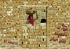
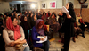
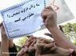
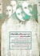
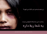
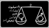
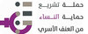

مقالههاى اين بخش
- 21 اسفند 1392

بررسی برخی از شاخص های توصیف کننده وضعیت موجود و مرور سیاست ها و برنامه های مرتبط
- 20 اسفند 1392

- 17 اسفند 1392
- 16 اسفند 1392

- 30 بهمن 1392
- 8 بهمن 1392

مجموعه مقالات نشستِ
- 16 دی 1392
- 24 آذر 1392

- 19 آذر 1392
- 18 آذر 1392

- 15 آذر 1392

- 20 مهر 1392
ترجمه : روژین محمدی
- 17 مهر 1392

- 14 مهر 1392

- 10 مهر 1392
گفت و گو با ناهید میرحاج
- 6 مهر 1392
- 2 مهر 1392

- 2 مهر 1392
- 30 شهریور 1392
دلارام علی
- 18 شهریور 1392
گفت و گو با زهره ارزنی
- 12 شهریور 1392
سالگرد هفتم
- 7 شهریور 1392
به بهانه ی هفتمین سالگرد کمپین یک میلیون امضا
- 3 شهریور 1392
- 15 مرداد 1392
ارائه شده در بیست و سومین کنفرانس بنیاد پژوهشهای زنان
منیره کاظمی
- 1 مرداد 1392

- 31 تیر 1392
- 10 تیر 1392
شهاب شیخی ، نگار انسان
- 25 خرداد 1392
- 24 خرداد 1392
- 20 خرداد 1392
مصاحبه با ملک اوزمن،فمینیست مستقل ترک
مصاحبه و ترجمه : سیما حسین زاده
0 | | | | | | | | | ... |